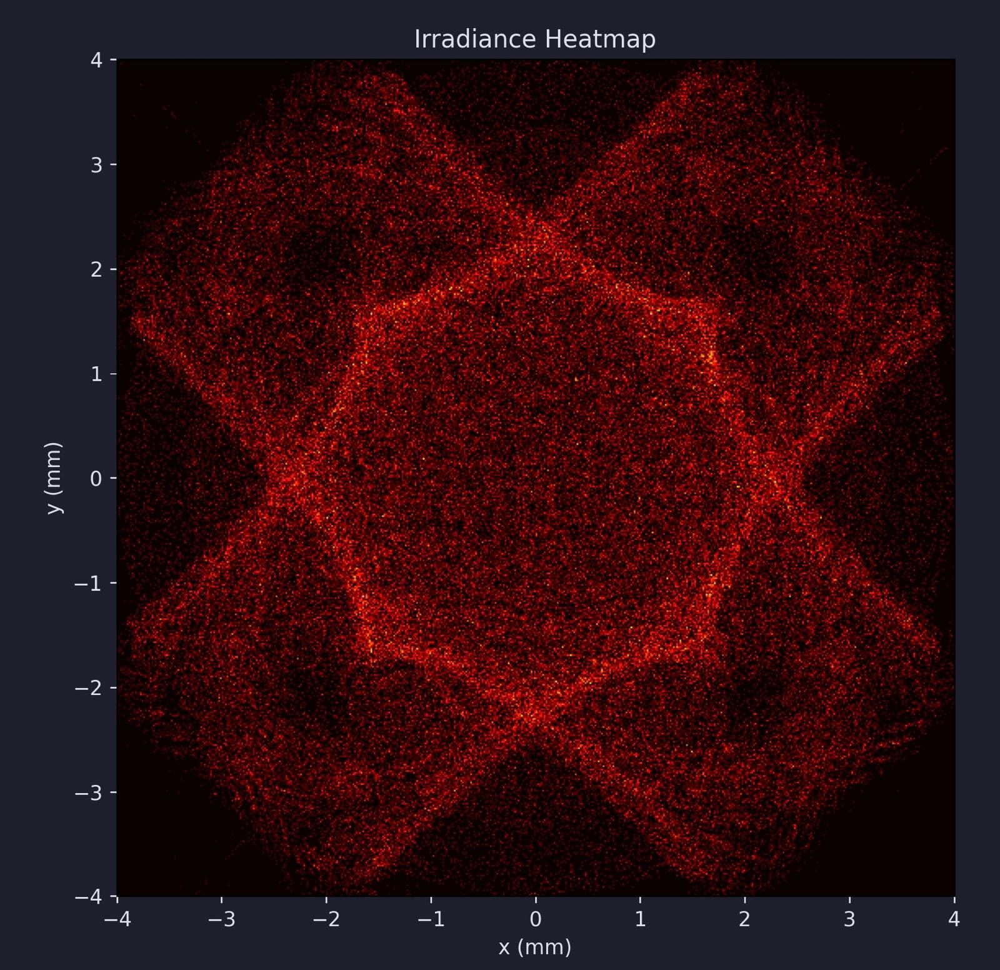

I built a custom ray tracing tool by using AI to modify an open-source ray tracing software package to suit our needs.
The base open-source software didn't support importing custom models, so I added that capability myself. That let us run rough optical analysis on the FTPRs, which helped narrow down design decisions during the reflector redesign. I am not able to show a heatmap from our actual reflectors, so the following image is an example from a random design.

Ray Tracing Heatmap Example